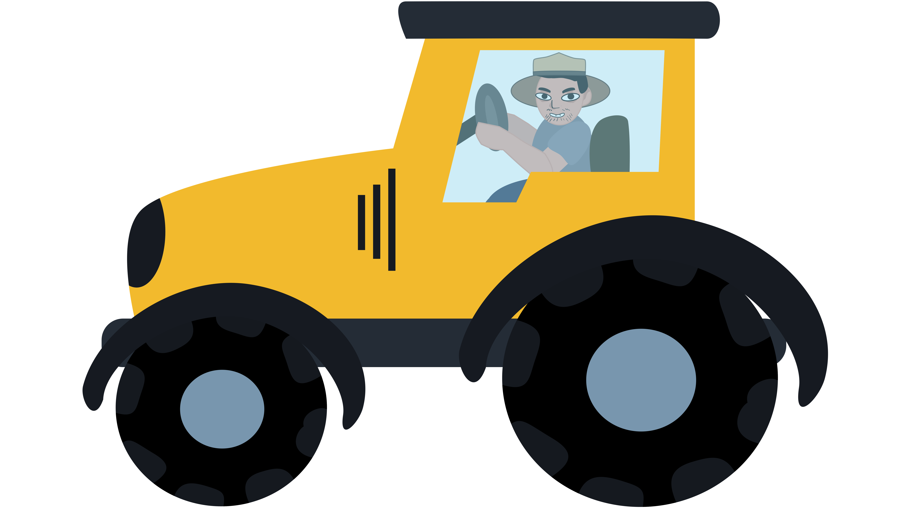
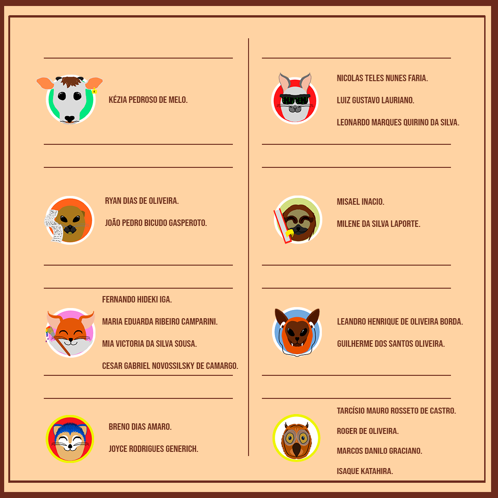

AgroQuest é um jogo digital educativo em formato de quiz, desenvolvido para apresentar de maneira interativa as etapas que compõem o agronegócio. Uma experiência para descobrir como o campo se conecta ao nosso dia a dia.



